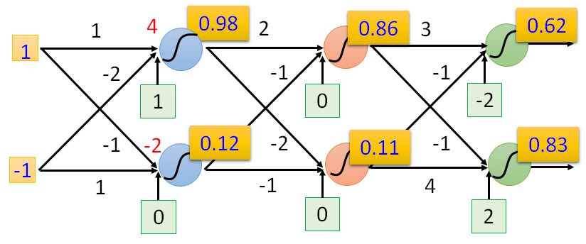
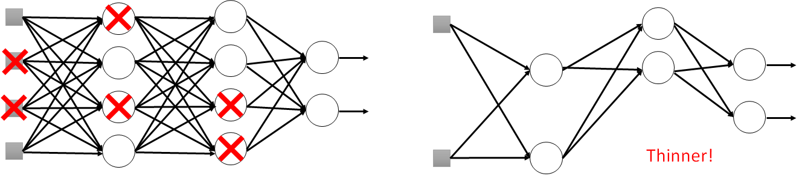

考完啦～希望各位都有好成绩！要感谢的人好多啊，等到年终总结再写吧（2018.12.15）
仅做自己复习使用，如有错误，感谢告知！
另外一位同学的期末总结笔记，感觉写的比我好!
老师课件里的小猴子~到底该怎么更新参数？

绪论
AI的四大主流流派
- 符号主义（Symbolism）
- 连接主义（Connectionism）
- 行为主义（Behaviourism）
- 统计主义（Statisticsism）
机器学习属于统计主义
AI , 机器学习，深度学习三者之间的异同和关联
包含关系

人工智能包含机器学习，机器学习包含深度学习
机器学习与深度学习之间的异同和关联
- 机器学习需要人工作特征筛选
- 深度学习因为它的“Deep”，所以不需要过多的人工干预，深度神经网络会自动学习特征
机器学习分为两个阶段
- 训练：“三步曲” on training set
- 定义Model
- 定义Loss/cost/error/objective function
- 如何找到Model中的最佳function：利用梯度下降来迭代调整参数，以使得损失函数达到最小值
- 反向传播
- 预测：on Dev set and testing set
- 前向传播：预测输出，计算Loss
机器学习的分类
监督学习（Supervised Learning）
Data = Labelled data
半监督学习（Semi-supervised Learning）
Hard to collect a large amount of labelled data
Data = Labelled data + Unlabeled data
无监督学习（Unsupervised Learning）
data = Unlabeled data
强化学习（Reinforcement Learning）
强化学习是智能体（Agent）以“试错”的方式进行学习，通过与环境进行交互获得的奖赏指导行为，目标是使智能体获得最大的奖赏
迁移学习（Transfer Learning）
Data not directly related to the task considered(can be either labeled or unlabeled)
- Similar domain, different tasks，如：都是动物领域，但是一个模型识别猫，另一个迁移模型识别老虎
- Different domains, same task，如：都是识别猫，但是一个模型是现实中的猫，另一个迁移模型是识别漫画里的猫

线性回归（Linear Regression）
什么是机器学习？
对于某类任务T和性能度量P，一个计算机程序被认为可以从经验E中学习是指，通过经验E改进后，它在任务T上由性能度量P衡量的性能有所提升
其中：
任务T：新闻分类、文本翻译等
性能度量P：Loss/cost/error/objective function
经验E：训练集
线性回归model
例如：$Y = W^T X + b$
机器学习训练模型“三步曲”
- Step 1: define a set of function
- Step 2: goodness of function
- Step 3: pick the best function
训练好后，得到能拟合数据的最佳function$ f^*$
机器学习中的过拟合与欠拟合（Overfitting & Underfitting）
过拟合：指模型对于训练数据拟合呈过当的情况，反映到评估指标上，就是模型在训练集上的表现很好，但在测试集和新数据上的表现较差
解决方法：
- 获得更多的训练数据
- 正则化方法
- 降低模型复杂度
- 集成学习方法：集成学习是把多个模型集成在一起，来降低单一模型的过拟合风险
欠拟合：指模型在训练和预测时表现都不好的情况
解决方法：
- 添加新特征：当特征不足或者现有特征与样本标签的相关性不强时，模型容易出现欠拟合
- 减小正则化系数 $\lambda$
- 增加模型复杂度：简单模型的学习能力较差，通过增加模型的复杂度可以使模型拥有更强的拟合能力

图（a）是欠拟合的情况，拟合的黄线没有很好地捕捉到数据的特征，不能够很好地拟合数据。图（c）则是过拟合的情况，模型过于复杂，把噪声数据的特征也学习到模型中，导致模型泛化能力下降，在后期应用过程中很容易输出错误的预测结果。
误差来源分析：偏差、方差
在有监督学习中，模型的泛化误差来源于两个方面——偏差和方差，具体来
讲偏差和方差的定义如下：
偏差：指的是由所有采样得到的大小为m的训练数据集训练出的所有模型的输出的平均值和真实模型输出之间的偏差
偏差通常是由于我们对学习算法做了错误的假设所导致的，比如真实模型是某个二次函数，但我们假设模型是一次函数。
由偏差带来的误差通常在训练误差上就能体现出来。方差：指的是由所有采样得到的大小为m的训练数据集训练出的所有模型的输出的方差
方差通常是由于模型的复杂度相对于训练样本数m过高导致的，比如一共有100个训练样本，而我们假设模型是阶数不大于200的多项式函数。由方差带来的误差通常体现在测试误差相对于训练误差的增量上。
上面的定义很准确，但不够直观，为了更清晰的理解偏差和方差，我们用一个射击的例子来进一步描述这二者的区别和联系。假设一次射击就是一个机器学习模型对一个样本进行预测。射中靶心位置代表预测准确，偏离靶心越远代表预测误差越大。
我们通过n次采样得到n个大小为m的训练样本集合，训练出n个模型，对同一个样本做预测，相当于我们做了n次射击，射击结果如图12.4所示。我们最期望的结果就是左上角的结果，射击结果又准确又集中，说明模型的偏差和
方差都很小；右上图虽然射击结果的中心在靶心周围，但分布比较分散，说明模型的偏差较小但方差较大；同理，左下图说明模型方差较小，偏差较大；右下图说明模型方差较大，偏差也较大。

- 误差计算
其中：
- 偏差、方差与过拟合、欠拟合之间的关系
- 欠拟合：高bias error, 低 variance error
- 过拟合：低bias error, 高variance error（低bias表示未欠拟合，过拟合是在未欠拟合的基础之上谈的）
- Good：低bias error, 低variance error
三类数据集
- 训练集（Training set）：用于学习参数
- 开发/验证集（validation set）：用于挑选超参数
- 测试集（Testing set）：用于估计泛化误差
交叉验证（Cross Validation）
k-fold交叉验证：首先将全部的训练样本划分成k个大小相等的样本子集；依次遍历这k个子集，每次把当前子集作为验证集，其余所有子集作为训练集，进行模型的训练和评估；最后把k次评估指标的平均值作为最终的评估指标。
举例：当k=3时：

模型参数 v.s. 超参数
模型参数：模型内部的配置变量，可以使用数据（训练集）训练模型来不断优化的变量
- 举例：线性回归模型 $Y = W^T X + b$ 中的 $W$ 和 $b$
超参数：模型外部的配置变量，必须手动设置值的变量
- 举例：模型的阶数、学习率 $\eta$ 、正则化系数 $\lambda$ 、CNN网络中的卷积核尺寸、步长等
Tips：两者的本质区别是是否人为设定
正则化（Regularization）
L1范数（L1-norm）
其中：
参数更新时：
经过L1范数的正则化之后，每次参数更新时，总是比原来多减去一个定值$\eta\lambda sgn(w)$（如果 $\eta $固定）
L1范数（L2-norm）
其中：
参数更新时：
经过L2范数的正则化之后，每次参数更新时，总是比原来多减去$w$的小一部分，值为$\eta\lambda w$
对比L1与L2：
L2对比较大的参数 $w$ 惩罚会较强，对比较小的参数 $w$ 惩罚会较弱，L1每次只多减去一个定值，与参数 $w$ 无关
Elastic Net (L1 + L2)
正则化的好处
正则化能是模型中的一些不比较的参数值减小甚至降为0，使得参数具有稀疏性，说白了就是模型的很多参数是0。这相当于对模型进行了一次特征选择，只留下一些比较重要的特
征，提高模型的泛化能力，降低过拟合的可能。
如何加快模型的训练？
Tip 1: 特征缩放/归一化（Feature Scaling/Normalization）
对数值类型的特征做归一化可以将所有的特征都统一到一个大致相同的数值区间内。最常用的方法主要有以下两种:
线性函数归一化（Min-Max Scaling）：对原始数据进行线性变换，使
结果映射到[0, 1]的范围其中 $X$ 为原始数据，$X_{max}$ 、$X_{min}$ 分别为数据的最大值和最小值
零均值归一化（Z-Score Normalization）：将原始数据映射到均值为
0，标准差为1的分布上
特征归一化的好处：在学习速率相同的情况下，归一化后的更新速度会大于归一化前 ，需要更少的迭代就能找到最优解。

Tip 2: Gradient Descent算法的变体（Variants of Gradient Descent）
SGD（Stochastic Gradient Descent）
每次只随机从训练集中选一个样例 $X^{(i)}$ 来更新模型参数，此方法参数更新速度最快，但是loss曲线的抖动很大
BGD（ Batch Gradient Descent）
每次使用训练集中的所有样例来更新模型参数，此方法更新速度最慢，但是loss曲线一般会较稳定地下降
MBGD（Mini-batch Gradient Descent）
每次使用一个batch（样例数量=Batch_size）来更新模型参数，此方法相当于是SGD和BGD这两种极端方法的折中，更新速度较快，loss曲线抖动也较小
BatchSize = 1 ~ #(training data)
BatchSize =1时MBGD变为SGD
以上三种算法在更新参数时都按照如下公式更新：
其中
Adagrad算法
参数更新公式：
RMSProp算法
参数更新公式：
其中：
SGDM算法（SGD with Momentum）
NAG算法（SGD with Nesterov）
Adam算法（RMSProp + Momentum）
Nadam算法（Nesterov+Adam）
Tip 3: 调节学习率（learning rates）
几个易混的名词： Epoch、 Iteration、Batch_size、 Batch_num
Epoch：一个Epoch意味着会使用一次训练集中的所有样例
Iteration：表示迭代次数，即参数更新的次数
Batch_size：表示一个Batch中的样例数量，一般使用MBGD算法更新参数时会涉及到此超参数
Batch_num：表示训练集一共被划分成了多少个Batch，即Batch的数量
分类（Classification）
为什么不用线性回归来做分类？
原因1：强行用线性回归做分类，有时候模型会被一些正常数据误导
比如下图中的例子，左图中的模型（绿线）能很好地将两个类别分开，但是如果Class1引入了一些正常数据，他们仅仅只是偏离Class1中的大多数数据有些远，此时模型为了更好地拟合数据，会变成紫色的那条线，但是我们明显能感觉到紫色的线性模型其实没有原来那条绿色的线性模型好

原因2：当在做多分类任务的时候，会给模型引入一些实际上不存在的类别之间的关联
比如：一个类别数为3的分类任务，设定模型输出值0-3为Class1，3-6为Class2，6-9为Class3，此时我们已经默认地认为Class1与Class2中的样例比较相似，Class2与Class3中的样例比较相似，而Class1与Class3中的样例相差比较大，但是实际上可能Class1-Class3他们之间并没有这种关联
逻辑回归与线性回归（Logistic Regression & Linear Regression）对比
| Step | Logistic Regression | Linear Regression |
|---|---|---|
| Step 1 | $f_{w,b}(x)=\sigma(\sum_iw_ix_i+b)$ Output: between 0 and 1 | $f_{w,b}(x)=\sum_iw_ix_i+b$ Output: any value |
| Step 2 | Training data: （$x^{(n)}, \hat{y}^{(n)}$ 其中 $\hat{y}^{(n)}$:1 for class 1, 0 for class 2 $L(f)=\sum_n-[\hat{y}^{(n)}lnf(x^{(n)})+(1-\hat{y}^{(n)})ln(1-f(x^{(n)}))]$ | Training data: （$x^{(n)}, \hat{y}^{(n)}$） 其中 $\hat{y}^{(n)}$: a real number $L(f)=\cfrac{1}{2}\sum_n(f(x^{(n)})-\hat{y}^{(n)})^2$ |
| Step 3 | $w_i=w_i-\eta\sum_n-(\hat{y}^{(n)}-f_{w,b}(x^{(n)}))x_i^{(n)}$ | $w_i=w_i-\eta\sum_n-(\hat{y}^{(n)}-f_{w,b}(x^{(n)}))x_i^{(n)}$ |
为什么使用交叉熵（Cross-Entropy）而不是均方误差（MSE）来做逻辑回归的损失函数？
一般来说，平方损失函数更适合输出为连续，并且最后一层不含Sigmoid或
Softmax激活函数的神经网络；交叉熵损失则更适合二分类或多分类的场景。
如果使用均方差做损失函数，那么“三步曲”会变成下面的样子：
Step 1：$f_{w,b}(x)=\sigma(\sum_iw_ix_i+b)$
Step 2：Training data: （$x^{(n)}, \hat{y}^{(n)}$） 其中 $\hat{y}^{(n)}$：1 for class 1, 0 for class 2
- Step 3：取某一个样例 $x $ 来看
此时，设某个样例的标签是$\hat{y}=1$，那么
- IF $f_{w,b}(x)=1$，此时预测准确， $\cfrac{\partial L}{\partial w_i}=0$，参数不更新，合理
- IF $f_{w,b}(x)=0$，此时预测完全错误，此时参数需要大更新，但是$\cfrac{\partial L}{\partial w_i}=0$，非常不合理
（以下说明中， $a$ 为输出层的输出值，$y$ 为样例的真实标签，$z$ 为输出层神经元加权求和后还没有经过激活函数运算的值）
其实说白了就是如果使用均方误差，那么对 $w$ 和 $b$ 分别计算偏微分之后得到的梯度 $\nabla L=[(a-y)\sigma’(z)x, (a-y)\sigma’(z)]$，此时两者的梯度都与激活函数 $\sigma$ 的一阶导数成正比，但是我们观察 $sigmoid$函数的图像会发现它的一阶导数最大的时候在 $z=0.5$ 时，此时也才等于0.25，而且绝大多数时候都是小于0.25的，更新时前面还要乘以一个学习率 $\eta $ ，所以会导致更新的很慢。
但是如果采用Cross-Entropy来做损失函数，对 $w$ 和 $b$ 分别做平偏微分之后得到的梯度 $\nabla L=[(a-y)x, a-y]$，此时的两者的梯度与激活函数无关，与预测值 $a$ 和真实值 $z$之间的差值成正比，这也正是我们所希望的，即预测值与真实值差距越大，我们希望参数更新越快，预测值与真实值差距越小，我们希望参数更新越慢

下面这张图形象的表示了Cross-Entropy和MSE的梯度差距，其中黑色是Cross-Entropy的梯度，红色是MSE的梯度
（图片来源：Proceedings of Machine Learning Research）
Tips：均方差与均方误差的区别
- 标准差（Standard Deviation） ，中文环境中又常称均方差
- 均方误差（mean squared error），各数据偏离真实值的距离平方和的平均数，即误差平方和的平均数
多分类任务的输出层为什么要使用Softmax
Softmax公式，模型预测当前样例为第 $i
$ 个类别的概率为：
Softmax能将输出层的值转换为总和为1概率分布，这样方便我们在做分类时选择概率值最大的那个类别作为模型的预测类别
Softmax与sigmoid
其实可以将sigmoid看成是Softmax的特殊情况，当分类任务变成二分类时，Softmax也就变成了sigmoid
推导如下：
其中：
将 $\sigma(z_1-z_2) $ 和 $\sigma(z_2-z_1)$带入上式相加后得：
逻辑回归（Logistic Regression）的局限性
逻辑回归不能解决线性不可分问题
例如：异或（XOR）问题，下图中的四个点两个类很直观地表示了异或逻辑，我们不能找到一条线将两个类很好地区分开
解决异或问题测方案是使用两层级联的逻辑回归网络
特征变换（Feature transformation）
上面提到的使用两层级联的逻辑回归网络能解决异或问题，实质上是将上图中的4个点做了特征变换。
原来的点都有两个属性 $(x_1,x_2)$，现在分别计算这4个点与点 $(0,0)$, $(1,1)$ 的距离（相当于是第一层逻辑回归），得到的结果记作 $(x’_1, x’_2)$ ，计算结果如下：
$(0, 0)——>(0, \sqrt{2})$
$(0, 1)——>(0, 1)$
$(1, 0)——>(0, 1)$
$(1, 1)——>(\sqrt{2}, 0)$
此时把 $(x’_1, x’_2)$ 作为第二层逻辑回归的输入，再进行分类就变得容易了
总体的网络图如下：
但是并不是所有的线性不可分问题都能这样简单地解决，因为这需要我们有这个领域的知识做基础，但事实上我们并不能把所有专业领域的知识都学习一遍，所以就有深度神经网络出来了，也就是说，上面这种级联的两层逻辑回归网络实际上是深度神经网络的雏形
深度学习（Deep learning）
为什么需要深度神经网络？
自动筛选特征，能学到更抽象的特征。（没那么简单T^T，后面再更新）
比较训练过程中，机器学习与深度学习的“三步曲”的异同
不同点：在训练阶段，机器学习与深度学习的“三步曲”中的第一步有细微差别，两者虽然都是定义一个模型，但是深度学习中的模型（Function Set）是一个神经网络结构，神经元之间不同的连接会导致不同的网络结构，从而导致不同的函数集合，即Given network structure, define a function set
相同点：“三步曲”中的后两步，也就是定义损失函数和优化参数找到最佳模型是相同的
前向传播算法（Forward propagation）
作用：用于预测输出，计算Loss
举例：
前向传播公式（以$sigmoid$函数为例）：

上面两个例子的结果：
反向传播算法（Back propagation）
作用：用于更新模型参数
预备知识：链式求导法则（Chain Rule）
Case 1：$z=h(y), y= g(x)$
$\Delta x\to\Delta y\to\Delta z$，此时$\cfrac{dz}{dx}=\cfrac{dz}{dy}\cfrac{dy}{dx}$
Case2：$z=k(x,y),x=g(s),y=h(s)$
$\Delta s\to\Delta x\to\Delta z$
$\Delta s\to\Delta y\to\Delta z$，此时$\cfrac{dz}{ds}=\cfrac{\partial z}{\partial x}\cfrac{dx}{ds}+\cfrac{\partial z}{\partial y}\cfrac{dy}{ds}$
反向传播算法（Back propagation）
损失函数：
其中
- n：表示每个样例
- N：表示样例的总数
- $l^{(n)}(\theta)$ ：表示第$n$个样例的损失值
$L(\theta)=\sum_{n=1}^{N}l^{(n)}(\theta) $：表示N个样例的总损失值
$\theta=\{w1,w2,w3,w4,…,b1,b2,…\}$：为深度神经网络的参数
这个例子的意思是通过Batch_size=N的一个batch来更新一次所有参数 $\theta$
为了问题简单化，抽取其中的一个样本来计算 $\cfrac{\partial l(\theta)}{\partial w}$，会计算这个，其他样本同理也可以计算，最后加起来就可以得到 $\cfrac{\partial L(\theta)}{\partial w}$ ，从而去更新参数 $w$ 。
根据链式求导法则， $\cfrac{\partial l}{\partial w}=\cfrac{\partial l}{\partial z}\cfrac{\partial z}{\partial w}$
我们可以通过下图整体性的理解一下反向传播算法
反向传播算法虽然名为“反向传播”，但是实际上是正着需要计算一遍，反着也需要计算一遍
正向计算时，我们能得到所有的 $\cfrac{\partial z}{\partial w}$，都等于当前层的输入值，反向计算时，计算的是$\cfrac{\partial l}{\partial z}$，然后将他们两个相乘就能得到$\cfrac{\partial l}{\partial w}$，这就是总体的思想，至于怎么正向计算求$\cfrac{\partial z}{\partial w}$和反向计算求$\cfrac{\partial l}{\partial z}$，往下看~
其中反向计算部分 $\cfrac{\partial l}{\partial z}$待会儿再讨论，因为它比较麻烦，我们先计算正向计算部分$\cfrac{\partial z}{\partial w}$
正向计算部分：
看下面这个网络，我们能轻易地计算出 $\cfrac{\partial z}{\partial w_1}=x_1 ，\cfrac{\partial z}{\partial w_2}=x_2$

而且我们还能发现，其实$\cfrac{\partial z}{\partial w}$的值就是该层神经元的输入值，因此如果带入一些数据进去计算，可以得到下图

可以看到，每一层的$\cfrac{\partial z}{\partial w}$都等于该层的输入值
上图在计算时，激活函数采用 $sigmoid$函数
反向计算部分：
计算完了$\cfrac{\partial z}{\partial w}$，再来计算$\cfrac{\partial l}{\partial z}$，同样根据链式求导法则， $\cfrac{\partial l}{\partial z}=\cfrac{\partial l}{\partial a}\cfrac{\partial a}{\partial z}$，其中$a=\sigma(z)$
上式中，$\cfrac{\partial a}{\partial z}=\sigma’(z)=\sigma(z)(1-\sigma(z))$ 是一个可以算出来的数值，而$\cfrac{\partial l}{\partial a}$ 怎么来计算呢？我们先来看看下面这张图

这张图中，第二层的两个神经元加权求和后的值分别为 $z’$ 和 $z’’$
通过这张图，根据链式求导法则我们能计算出$\cfrac{\partial l}{\partial a}=\cfrac{\partial l}{\partial z’}\cfrac{\partial z’}{\partial a}+\cfrac{\partial l}{\partial z’’}\cfrac{\partial z’’}{\partial a}$，而其中的 $ \cfrac{\partial z’}{\partial a}=w_3,\cfrac{\partial z’’}{\partial a}=w_4$ ，现在假设$\cfrac{\partial l}{\partial z’},\cfrac{\partial l}{\partial z’’}$已知，那么$\cfrac{\partial l}{\partial z}$也就计算出来了
(算法精华部分)可以将上式理解成一个线性的反向传播的网络（此算法因此得名），如下图所示

为什么这个网络是线性的呢？
- 因为$\sigma’(z)$是一个常数，在前向传播时 $z$ 的值已经被确定了，因此$\sigma’(z)=\sigma(z)(1-\sigma(z))$也是一个常数值，所以$\cfrac{\partial l}{\partial z}$相当于 $\cfrac{\partial l}{\partial z’},\cfrac{\partial l}{\partial z’’}$加权求和后乘了一个常数，也就是线性变换啦
回头看看我们的目标，此时$\cfrac{\partial l}{\partial w}=\cfrac{\partial l}{\partial z}\cfrac{\partial z}{\partial w}$已经可以计算出来了，结束！那是不可能的。。。前面是假设$\cfrac{\partial l}{\partial z’}，\cfrac{\partial l}{\partial z’’}$ 已知，但实际未知，现在就要来求他们了，可以分为以下两种情况
Case1：刚才那张图的第二层就是输出层，也就是下图的情况
此时， $\cfrac{\partial l}{\partial z’}=\cfrac{\partial l}{\partial y_1}\cfrac{\partial y_1}{\partial z’}，\cfrac{\partial l}{\partial z’’}=\cfrac{\partial l}{\partial y_2}\cfrac{\partial y_2}{\partial z’’}$，其中 $\cfrac{\partial l}{\partial y_1}, \cfrac{\partial l}{\partial y_2}$很好求，$\cfrac{\partial y_1}{\partial z’}=\sigma’(z’)$，搞定收工！
Case2：刚才那张图的第二层不是输出层（此时是一个深度网络），也就是下图的情况

此时
把上式转换成反向传播的形式
（精华啊）也就是说，跟刚才一样，将上面的图看成一个线性的反向传播的网络，如下图所示

我们可以重复上面的步骤，直到到达输出层，就转换成了Case1的情况
（精华中的精华啊）事实上没必要向刚才推导的那样，从前往后计算$\cfrac{\partial l}{\partial z}$，我们可以从后往前计算，就像下面这张图一样

综上，通过前面的正向计算和反向计算分别得到所有的 $\cfrac{\partial z}{\partial w}$和$\cfrac{\partial l}{\partial z}$，再将他们相乘就得到了$\cfrac{\partial l}{\partial w}$
bias的更新同理，只是有一点小区别是$\cfrac{\partial z}{\partial w}$每次都是等于该层神经元的输入，而$\cfrac{\partial z}{\partial b}$每次都是等于1的（这个求导很简单，看下面的公式），也就是说，只用计算$\cfrac{\partial l}{\partial z}$就能知道bias的所有梯度值了，从而去更新它
反向传播算法练习
其中
lr=0.9
Loss=MSE
- 激活函数：sigmoid
- 这个样例的label=1
参考答案
深度学习中的过拟合与欠拟合（Overfitting & Underfitting）
前面有提到深度学习中的过拟合与欠拟合的定义和解决方法，其实深度学习与之类似，因为深度学习就是机器学习的一个分支，但是深度学习有它自己的特殊性，所以其过拟合与欠拟合的解决方法与传统的机器学习相比也有它的特殊方法
过拟合解决方法
首先，一个老生常谈的事情，只有在训练集是能够表现得好（即没有欠拟合）的模型才有可能是过拟合的。所以，训练好模型之后的第一件事情是测试模型在训练集上的准确率，如果表现得很好，但是拿到测试集（验证集）上做测试时表现糟糕，那这就是过拟合的表现了，可以使用下面的方法来解决
- 提前停止训练（Early Stopping）
- 正则化（Regularization）
获取更多数据（万能药）
有时候不能获得更多数据，但是我们可以人为“造”数据，比如MNIST手写数字集中的每张图片，我们可以将其中的内容顺时针、逆时针旋转15°，这样数据集一下就是原来的3倍了，并且这样做是符合现实情况的，因为在日常生活中有人写字喜欢向左倾斜，有人喜欢向右倾斜
欠拟合解决方法
传统的机器学习方法（比如：决策树，SVM等）在训练集上训练好模型后，在训练集上的正确率可能会非常高，但是深度学习中，训练好模型后，并不一定会在训练集上表现得很好，因为很可能 $loss$ 很可能停在了局部最小值（local minimum）或者鞍点（saddle point）处，此时可以采用下方的方法来尝试解决
选择合适的损失函数（Choosing proper loss）
做分类任务时选择Cross-Entropy而不是MSE
选择合适的Batch_size大小 & 批标准化（Batch Normalization）
选择合适的激活函数（New activation function）
使用sigmoid函数作为激活函数时，可能会导致梯度消失（Vanishing Gradient）问题
为避免梯度消失和梯度爆炸可以选择ReLU函数（Rectified Linear Unit ）作为激活函数
自适应学习率（Adaptive Learning Rate）
采用动量优化方法（Momentum）
例如：Adam算法（RMSProp + Momentum）
ReLU函数与Maxout函数
ReLU函数
全称：Rectified Linear Unit，线性整流函数，如下图所示：
我的理解是，使用这个激活函数之后，如果某些神经元加权求和后的值小于0，根据上图，激活值就等于0，此时就相当于dropout掉了这一部分神经元，这样能使得网络变得更加简单（更苗条），同时 $z$ 经过ReLU函数之后也不会出现梯度减小的问题，如下图所示，右图是将左图看成dropout之后的样子
ReLU函数还有很多变体：
Leaky ReLU
如下图所示
Parametric ReLU
如上图所示，其中的 $\alpha$ 也可以当做参数通过梯度下降去调整和学习
Maxout函数
说实话这部分内容不太好写清楚，如果觉得迷糊可以看李宏毅老师在b站的机器学习视频
Maxout可以理解成是一种激活函数，但它与一般的激活函数（比如阈值函数、S函数等）不同，它是一种可以学习的激活函数，什么意思呢？贴一张神图（来自李宏毅老师/余老师PPT）
上图中的激活函数可以理解成红框框出来的neuron，里面有两个elements（也可以设置为多个），它会选择前面两个 $z$ 中的较大值输出作为下一层的输入。
再看下面这张图：
上图中的左图是ReLU函数作为激活函数时的情况，如果把Relu函数画出来就像下图中的左图一样，而上图中的右图是使用Maxout作为激活函数时的情况，并且连接此神经元的权值为 $w,b,0,0$，此时如果把Maxout函数画出来就像下图中的右图一样。
观察上图我们发现：
- 当后两个权值都为0时，$z_1=wx+b,z_2=0$，所以到Maxout函数这儿的时候，总是会选择输出$z_1$，除非$z_1$的值小于0
- 当后两个权值都为0时，Maxout也就变成了ReLU，所以说ReLU是一种特殊的Maxout
当我们改变连接神经元的权值时，相当于就改变了Maxout这个激活函数，但通常权值是通过GD算法来自动更新的，所以Maxout可以理解成是一种可以学习的激活函数
当连接神经元的权值发生改变时，Maxout函数可以变成很多形式，举例：
改变elements的个数时，可以得到多段折线的Maxout函数，如下图所示

随机失活（Dropout）做法
dropout原理
dropout的做法是随机失活神经网络中的一部分神经元，所以每次失活一部分神经元之后，网络结构就发生了改变，相当于一个“新的网络结构”，假设使用N个miniBatch来训练N次dropout之后的神经网络，那么就得到了N个（可能小于N个）不同的神经网络，此时再将所有网络结合起来，放到验证集/测试集上做测试，能达到较好的结果
问题1：为什么每次dropout掉一部分神经元，最后再结合起来效果会更好呢？
答：我在一门视频课里看到的解释是，每次随机dropout掉一部分神经元，能减小神经元之间的相互依赖性，最终整体地提高神经网络的健壮性
问题2：使用一个miniBatch来训练一个“新的网络结构”，会不会训练集太少而导致欠拟合呢？
答：不会，因为虽然好像dropout之后训练的是一个新的网络结构，但实际上这N个dropout之后的神经网络是共享参数的，所以相当于所有的miniBatch数据都作用到了这个网络中，不会因为训练数据少而导致欠拟合。
训练阶段
在训练时，假设每个神经元有 $p\%$ 的概率被dropout掉
在Tensorflow中使用dropout时，需要调用tf.nn.dropout()函数，其中有一个参数时
keep_prob，它与上边的 $p\% $刚好相反，
keep_prob表示神经元的保留概率（The probability that each element is kept.）。
测试阶段
测试阶段是不用dropou的，但是有一点需要注意，在训练好的网络里，所有的参数都要乘以 $(1-p\%)$。
举例：训练阶段的dropout rate = $20\%$，训练结束之后，某一权值$w=1$，那么在做测试时，要将 $w*0.8=0.8 $
梯度消失（Vanishing Gradient）与梯度爆炸（Exploding Gradient）问题
梯度消失问题
靠近输出层的那几层梯度大，靠近输入层的梯度很小，因此靠近输入层的参数更新的很慢，最终会导致靠近输出层的那几层参数很快就收敛了（但是收敛的值是个错值，因为网络的前面就不对），而靠近输入层的参数几乎不更新
梯度爆炸问题
与梯度消失问题相反，靠近输出层的那几层梯度小，靠近输入层的梯度很大
问题来源：不合适的激活函数
例如：sigmoid函数会使输入衰减（如下图所示）
问题解决方法：
使用其他的激活函数，比如：ReLU
卷积神经网络（ Convolutional Neural Network）
什么样的场景适合使用CNN模型？
- 主要用于图像处理
CNN网络结构组成
输入层
输入层是整个神经网络的输入，在处理图像的卷积神经网络中，它一般代表了一张图片的像素矩阵。
卷积层
卷积层时卷积神经网络中最重要的部分，和传统的全连接层不同，卷积层中每一个节点的输入只是上一层神经网络的一小块，这个小块常用的大小有3x3或者5x5。卷积层试图将神经网络中的每一小块进行更加深入的分析从而得到抽象程度更高的特征。
池化层
池化层可以认为是将一张分辨率较高的图片转化为分辨率较低的图片。通过池化层可以进一步缩小最后全连接层中结点的个数，从而达到减少整个神经网络中参数的目的。
全连接层
在卷积神经网络的最后，一般会是由1到2个全连接层来给出最后的分类结果。经过几轮卷积层he池化层的处理之后，可以认为图像中的信息已经被抽象成了信息含量更高的特征。我们可以将卷积层和池化层看成自动提取图像特征的过程，在特征提取完成之后，仍然需要使用全连接层来完成分类任务。
Softmax层
跟上文提到的多分类任务的输出层为什么要使用Softmax原因一样，softmax层主要用于分类问题，通过它，可以得到当前样例属于不同种类的概率分布情况。
为什么选择使用CNN做图像处理？
一张图片上的某些重要特征（例如：鸟嘴）相对于整张图片来说非常小，而CNN中的一个神经元只关注图像中的某一局部的特征，正因为只关注了某一个局部的特征，所以能够大大减小网络的参数（所有神经元共享卷积核中的参数）
附上一张神图，下图中6x6的image在做卷积时，第一个Neural总是只关注左上角的3x3的局部区域（[0:2][0:2]），而第二个Neural总是只关注[0:2][1:3]的区域，以此类推……
某些重要特征可能出现图片的不同位置，CNN的中的神经元以卷积核的尺寸大小去扫描整张图片，所以能找到图片上不同位置上的同一特征，例如：在图片左上角的鸟嘴和右下角的鸟嘴
CNN中的池化操作（非必需）能减小图片的尺寸但保留对象的特征
CNN模型的一些其他细节
网络的非全连接
跟传统的全连接神经网络不同，CNN中的神经元只做部分链接，可以参考刚才上面那张神图
第一个神经元只跟${1, 2, 3, 7, 8, 9,13,14,15}$号输入层神经元相连接，第二个神经元只跟${ 2, 3, 4, 8, 9,10,14,15,16}$号输入层神经元相连接，前面也提到了，这样做的主要目的是让一个神经元只关注图像中的某一局部的特征，而不用关注整张图片，这样子做能带来很多好处：能使得参数相对于全连接神经网络大幅度减少，从而加快了计算速度，降低了模型过拟合的可能性
卷积核（Kernel）/过滤器（Filter）
过滤器可以将当前层神经网络上的一个子节点矩阵转化为下一层神经网络上的一个单位节点矩阵。
单位节点矩阵：指的是长和宽都是1但是深度不限的节点矩阵
过滤器的常用尺寸有3x3、5x5。因为过滤器处理的矩阵深度和当前层神经网络节点矩阵的深度是一致的，所以虽然节点矩阵是三维的，但是过滤器的尺寸只需要指定两个维度。过滤器中另一个需要人工指定的设置是处理得到的单位节点矩阵的深度，这个设置称为过滤器的深度。
上面这句话的意思是：你需要设置这个卷积层有多少个[长x宽x深度] 的Filter，可以理解为，一个Filter就代表图像中的一个局部特征
注意：过滤器的尺寸指的是一个过滤器输入节点矩阵的大小，而深度指的是输出单位节点矩阵的深度。
步长（Stride）与填充（Padding）
这一部分主要是要会计算输出层矩阵的长度和宽度，公式如下：
其中 $out_{length}$ 表示输出层矩阵的长度，它等于输入层矩阵长度加上2倍的填充值减去Filter的长度再除以长度方向上的步长+1的向下取整值。
类似的， $out_{width}$ 表示输出层矩阵的宽度，它等于输入层矩阵的宽度加上2倍的填充值减去Filter的长度再除以宽度方向的步长+1的向下取整值。
循环神经网络（Recurrent Neural Network (RNN)）
什么样的场景适合使用RNN模型？
什么是序列数据？
即使只有一层的RNN模型，仍可能出现梯度消失和梯度爆炸，为什么？
LSTM与一般的RNN相比，优势在哪？
参考资料：
台大李宏毅 (Hung-yi Lee)老师 《机器学习入门》课程PPT
科大余艳玮老师《人工智能》课程PPT
《百面机器学习 算法工程师带你去面试》人名邮电出版社
《TensorFlow 实战Google深度学习框架》电子工业出版社